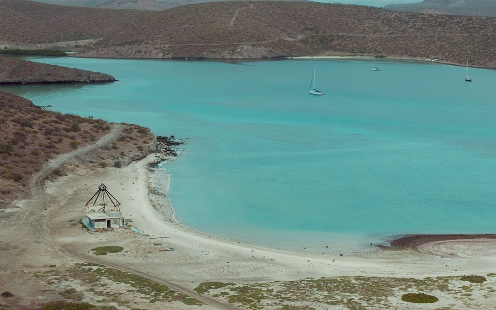
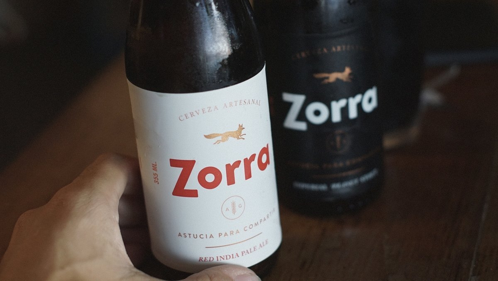
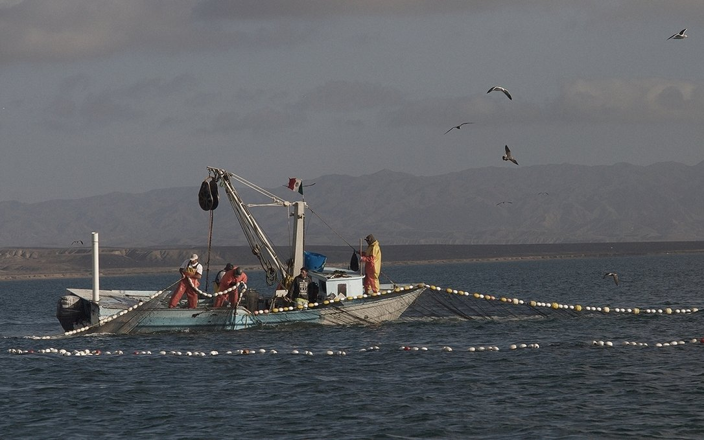
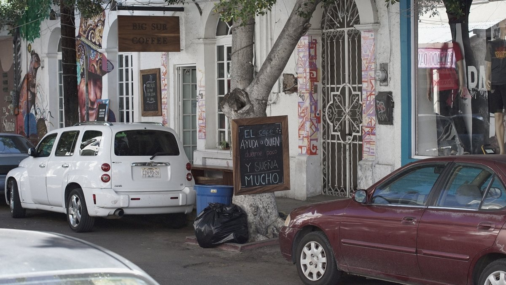
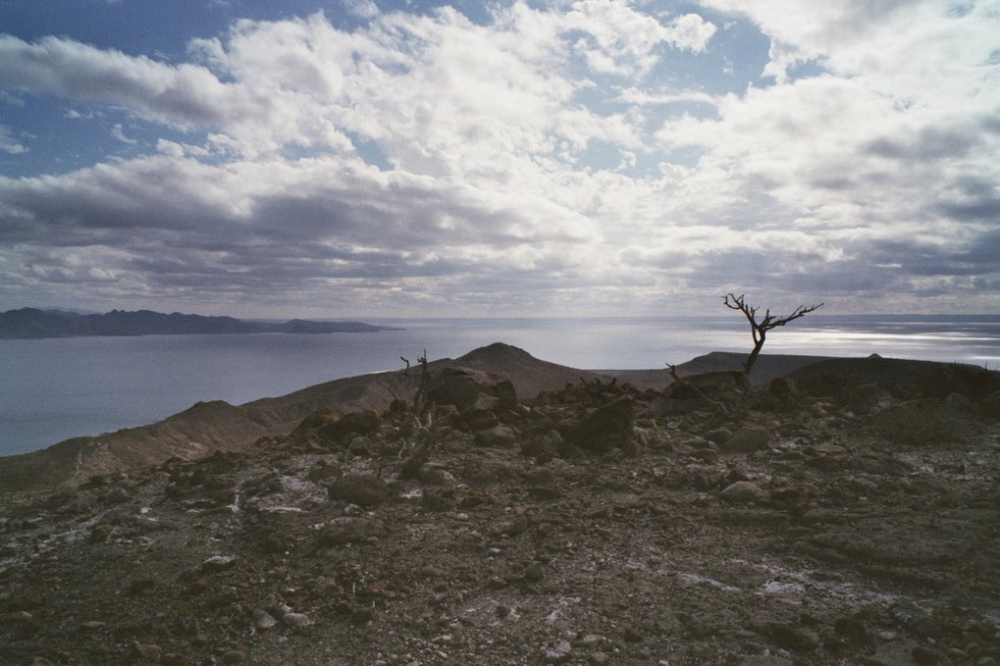
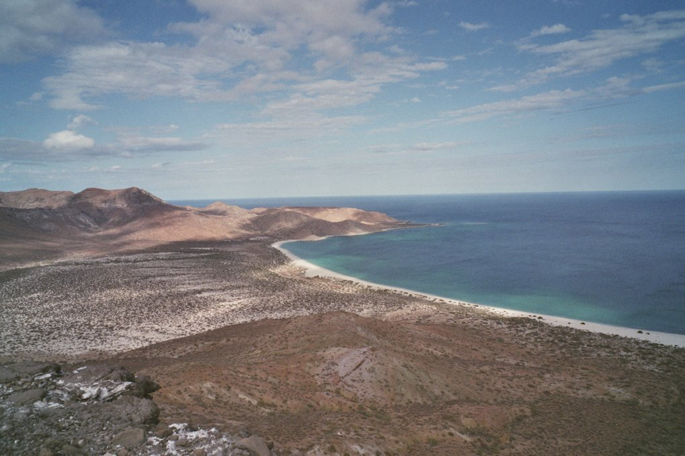
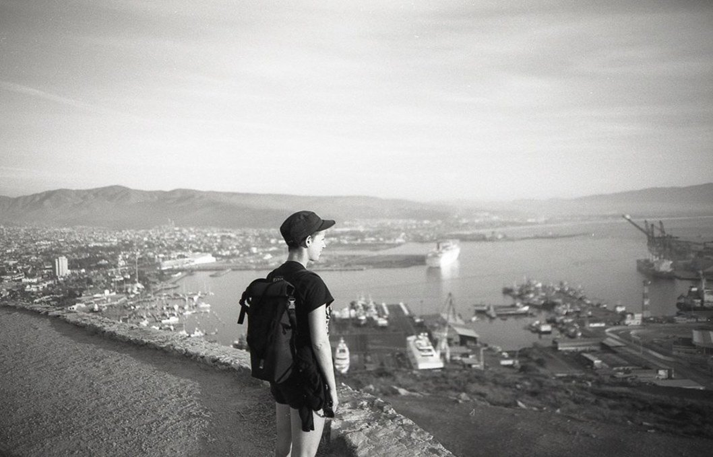
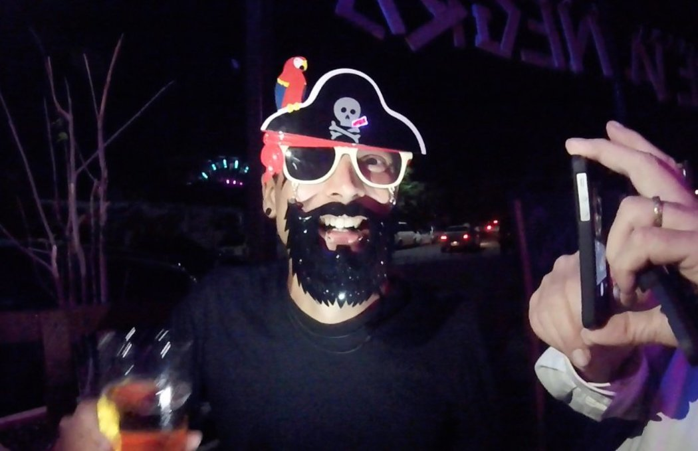

mexico
In November 2016, we sailed into Ensenada from San Diego. We stayed in its foggy waters for a month, before moving around the Baja Peninsula to go to La Paz. We made 3 stops on the way there: Bahía Tortugas, Puerto Los Cabos and Isla Espirito Santo.
We stayed in La Paz for 2 months, making several outings to nearby anchorages, like Bahía Falsa, Playa Balandra, Bahía Bonanza, Puerto Ballena, Bahía de Los Muertos etc.
Our favorite food there was nopales, and chipotle peppers.
     In 2017, we experienced the El Carnaval de La Paz, a celebration that dates back to the early nineteenth century, with lively parades and floats. We got very, very drunk.
